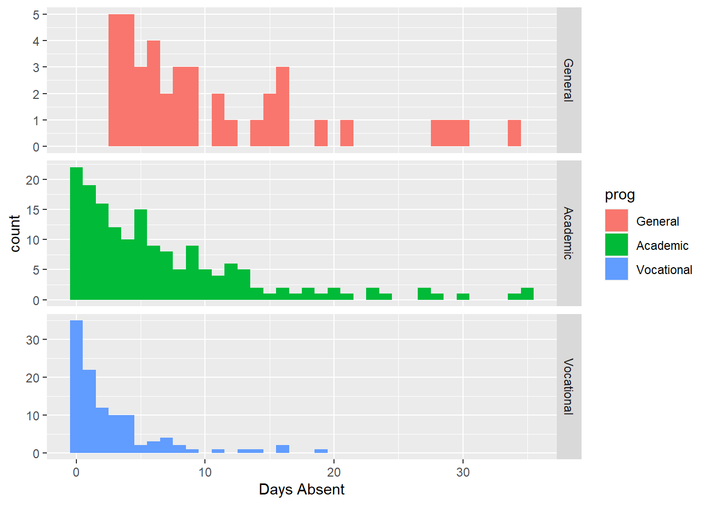

Chapter 13 Generalized Linear Models
In the previous chapter we introduced the idea of a Generalized Linear Model, where we fit a linear regression model to a response variable via a link function. Logistic regression highlights the case of a binary outcome (TRUE/FALSE, Success/Failure, Alive/Dead, 1/0). The ideas expressed in that chapter can be extended to a multitude of situations. This chapter offers an overview of the topic concentrating on count responses.
Example: Prevalence of salamanders. An observational field study is conducted in which the number of salamanders in different locations is counted. For this dataset, salamander count (the response variable) takes on non-negative integer values. This response is to be modeled as a function of two quantitative predictor variables: forest age and percentage of canopy cover.
What makes this problem different from problems we saw in the previous chapters? Since the response variable \(Y\) is a count (integers 0, 1, 2, \(\ldots\)), it is discrete and bounded below by 0. A common characteristic of counts is that the variability in the count increases with the mean. For example:
- If we had sampled sites with field conditions that produced low salamander counts, the counts would tend to be very similar because of the physical count boundary of 0.
- Conversely, sampled sites with field conditions that produce higher salamander counts would tend to be less similar (i.e. more variable).
Count variables by their very nature violate the usual constant variance assumption from regression. Furthermore, if the response \(Y\) is a count, then it must be greater than or equal to 0 to be valid. A standard regression method may not ensure this will happen either. Using an appropriate link function will ensure valid predictions.
For count data such as this, it is often more appropriate to assume the response variable \(Y\) follows a Poisson or Negative Binomial distribution, as compared to a Normal distribution utilized in standard regression.
13.1 Poisson Regression
Before getting into the details of Poisson regression we will briefly introduce the Poisson distribution. This is a common distribution that is covered in many Introductory Statistics books (although the topic tends to be omitted from many Intro Stat classes).
13.1.1 Poisson distribution
Suppose you had a binomial random variable \(X\). A common example is a coin flip where you observed the number of heads (\(X\)) out of \(n\) trials. Here we would say \[X \sim \textrm{Binomial}(n, p=0.5)\] where \(p=P(Heads)\) on any given coin flip.
Now, suppose that the number of trials \(n\) is very large (say, \(n\to\infty\)) and the probability of success is relatively small such that as \(n\) grows large, \(np\to c\), where \(c\) is some constant. In situations such as this, the observed value of \(X\) can be considered a count, 0, 1, 2, 3, \(\ldots\) and is unbounded as \(n\) grows.
Mathematics can show that in this situation \(X\) follows the following distribution
\[P(X=k) = \frac{\lambda^k e^{-\lambda}}{k!}, ~~k=0,1,2,\ldots\]
which is known as the Poisson distribution with rate parameter \(\lambda\). The rate parameter corresponds to \(\lambda=np\) in the aforementioned binomial situation and it can be shown that the theoretical mean of a Poisson random variable \(X\) is \(E[X]=\lambda\). Not only that, but \(\mu=E[X]=\lambda = Var(X)\). That is, for a Poisson random variable, its mean and its variance are the same - this fact is important later.
Simplified. A Poisson distribution is appropriate in some applications when the variable of interest is a count. Examples may include the number of customers who enter a bank in a given hour, the number of earthquakes observed along a fault line, and as we’ll see later, the number of tropical cyclones that develop in the Atlantic Ocean.
13.1.2 Poisson Regression Development
The basic construct of the Poisson Regression model is to use a \(\log\) link function. Namely, we are interested in modeling \(E[Y] = \mu = \lambda\) and that is acheived via \[\log(\mu) = \beta_0 + \beta_1 X_1 + \beta_2 X_2 + \ldots + \beta_k X_k\] Where \(\beta_j\) is the coefficient on the \(j^\mathrm{th}\) predictor variable \(X_j\). It is easy to “untransform” this model with an exponenent. Namely
\[\begin{equation} E[Y] = \mu = \lambda = e^{\beta_0 + \beta_1 X_1 + \beta_2 X_2 + \ldots + \beta_k X_k} \tag{13.1} \end{equation}\]
Important Notes. We have already established that for Poisson data \(\lambda = E[Y] = Var(Y)\); i.e., the mean and the variance are equal. In many applications it may be the case that the observed variance is greater than the mean; this phenonemon is known as overdispersion and can be an indication a Poisson regression is not appropriate (more on that later).
13.1.3 Example - Tropical Cyclone Counts in the North Atlantic
A tropical cyclone is a rapidly rotating storm system characterized by a low-pressure center, a closed low-level atmospheric circulation, strong winds, and a spiral arrangement of thunderstorms that produce heavy rain. Depending on its location and strength, a tropical cyclone is referred to by different names, including hurricane, typhoon, tropical storm, cyclonic storm, tropical depression, and simply cyclone. A hurricane or tropical storm is a tropical cyclone that occurs in the Atlantic Ocean and northeastern Pacific Ocean, and a typhoon occurs in the northwestern Pacific Ocean; while in the south Pacific or Indian Ocean, comparable storms are referred to simply as “tropical cyclones” or “severe cyclonic storms.” We will consider the tropical cyclone record for the North Atlantic Basin.
atlantic <- read.csv("atlanticCycloneRecord.csv")
head(atlantic)## Year TS H1 H2 H3 H4 H5
## 1 1851 3 2 0 1 0 0
## 2 1852 0 3 1 1 0 0
## 3 1853 4 1 1 1 1 0
## 4 1854 2 1 1 1 0 0
## 5 1855 1 1 2 1 0 0
## 6 1856 2 2 0 1 1 0tail(atlantic)## Year TS H1 H2 H3 H4 H5
## 162 2012 9 5 3 2 0 0
## 163 2013 12 2 0 0 0 0
## 164 2014 2 3 1 1 1 0
## 165 2015 7 2 0 1 1 0
## 166 2016 8 3 0 2 1 1
## 167 2017 7 2 2 2 2 2Consider 2017, news of hurricanes could not be missed (Harvey in Houston, Irma in Florida and Maria in Puerto Rico). In terms of impact on the United States, 2017 seemed extreme. But in a broader sense, one may ask, was 2017 that abnormal?
The answer to this question is a complex problem that cannot but tackled in a single textbook example but we will look at the simple case of modeling the number of storms (we are not concentrating on storm intensity or accumulated cyclone energy) and determined if 2017 seemed abnormal. In particular, we will consider the Southern Oscillation Index (SOI) as a predictor variable on trypical cyclone counts. The SOI is a standardized index based on the observed sea level pressure differences between Tahiti and Darwin, Australia. The SOI is one measure of the large-scale fluctuations in air pressure occurring between the western and eastern tropical Pacific (i.e., the state of the Southern Oscillation) during El Niño and La Niña episodes. In general, smoothed time series of the SOI correspond very well with changes in ocean temperatures across the eastern tropical Pacific. The negative phase of the SOI represents below-normal air pressure at Tahiti and above-normal air pressure at Darwin. Prolonged periods of negative (positive) SOI values coincide with abnormally warm (cold) ocean waters across the eastern tropical Pacific typical of El Niño (La Niña) episodes.
We will attempt to tackle the question of whether the SOI predict cyclone counts.
We begin by creating a total storm count variable
atlantic <- atlantic %>%
mutate(Storms=TS+H1+H2+H3+H4+H5)
tail(atlantic)## Year TS H1 H2 H3 H4 H5 Storms
## 162 2012 9 5 3 2 0 0 19
## 163 2013 12 2 0 0 0 0 14
## 164 2014 2 3 1 1 1 0 8
## 165 2015 7 2 0 1 1 0 11
## 166 2016 8 3 0 2 1 1 15
## 167 2017 7 2 2 2 2 2 17The variable Storms is the total number of tropical storms and hurricanes in a given year.
Let’s plot the storm counts in time to look at the historic record.
df.annotate <- data.frame(Year=c(1930,1960),
y=rep(23,2),
labs=c("1930", "1960"))
ggplot(atlantic) +
geom_vline(xintercept=c(1930,1960), col="royalblue") +
geom_text(data=df.annotate, aes(x=Year, y=y, label=labs), angle=90, nudge_x=-2.5, col="royalblue") +
geom_line(aes(x=Year, y=Storms), col="gray50") +
geom_point(aes(x=Year, y=Storms) ) +
ggtitle("North Atlantic Tropical Cyclone Storm Counts") +
theme_bw()In our plot we have the number of tropical cyclones per year with 1930 and 1960 highlighted for the following reasons: Overall we see some distinct change in the record (highlighted by blue vertical lines).
- Circa 1930 - Aircraft reconnaissance! Before this we only knew of a storm if it made land fall or a ship saw it.
- Circa 1960 - Satellites! Since the early 1960s we have eyes on the ocean all the time. Counts after 1960 are considered much more reliable.
Thus we remove all data before 1961 and calculate some summary statistics
atlantic <- atlantic %>%
filter(Year>1960)
atlantic %>% summarize(Avg.Storm = mean(Storms),
Var.Storm = var(Storms))## Avg.Storm Var.Storm
## 1 11.614 19.9555We note that on average there are 11.6 storms per year with a variance of near 20. We have some indication that maybe our response variable suffers from overdispersion, we will revisit that a little later.
Now we load in the SOI data.
soi <- read.table("soi.txt", header=TRUE)
head(soi)## YEAR JAN FEB MAR APR MAY JUN JUL AUG SEP OCT NOV DEC
## 1 1951 1.5 0.9 -0.1 -0.3 -0.7 0.2 -1.0 -0.2 -1.1 -1.0 -0.8 -0.7
## 2 1952 -0.9 -0.6 0.5 -0.2 0.8 0.7 0.5 0.1 -0.2 0.4 0.0 -1.2
## 3 1953 0.3 -0.5 -0.2 0.2 -1.7 0.1 0.0 -1.2 -1.2 0.1 -0.3 -0.5
## 4 1954 0.7 -0.3 0.3 0.6 0.5 0.1 0.4 1.1 0.2 0.3 0.1 1.4
## 5 1955 -0.5 1.9 0.6 -0.1 1.0 1.3 1.6 1.5 1.3 1.5 1.2 1.0
## 6 1956 1.3 1.6 1.3 0.9 1.4 1.1 1.1 1.2 0.1 1.8 0.2 1.1Since our storm counts are by year we need a single SOI value per year. The North Atlantic “Hurricane Season” is June through November, so we will consider the mean SOI value in those months. We will create the new variable using material from Chapter 1.
We take the SOI data and group_by YEAR. Then within a given year we calculate the mean SOI level for June, July, August, September, October and November. Lastly we select the variables of interest for our analysis and rename YEAR to Year (thus matching the cyclone counts).
soi <- soi %>%
group_by(YEAR) %>%
mutate(SOI = mean(c(JUN,JUL,AUG,SEP,OCT,NOV)) ) %>%
dplyr::select(YEAR, SOI) %>%
rename(Year=YEAR)
tail(soi)## # A tibble: 6 x 2
## # Groups: Year [6]
## Year SOI
## <int> <dbl>
## 1 2012 0.0333
## 2 2013 0.517
## 3 2014 -0.483
## 4 2015 -1.15
## 5 2016 0.417
## 6 2017 0.55Now we need to combine our Atlantic Hurricane data with the SOI measures. Essentially we want to join or merge the two datasets linking observations by Year. For those who know SQL, this is a common operation known as a join. R includes several functions to do this. Today we will use an inner_join so only rows with a common year between the two datasets will be included.
First we select the necessary variables form the atlantic dataset and then inner_join it with the SOI.
atlantic <- atlantic %>%
dplyr::select(Year, Storms)
combine <- inner_join(atlantic, soi, by="Year")
head(combine)## Year Storms SOI
## 1 1961 11 0.133333
## 2 1962 5 0.516667
## 3 1963 9 -0.533333
## 4 1964 12 0.950000
## 5 1965 6 -1.133333
## 6 1966 11 0.116667tail(combine)## Year Storms SOI
## 52 2012 19 0.0333333
## 53 2013 14 0.5166667
## 54 2014 8 -0.4833333
## 55 2015 11 -1.1500000
## 56 2016 15 0.4166667
## 57 2017 17 0.5500000Let’s plot our response variable Storms against our predictor variable Yearly.SOI. Here we use some extra features in ggplot to highlight 2017
First we create a variable called Highlight if the year is 2017. Then we save another dataset with just that observation so we can annotate the point with text. We use the aesthetic option color to highlight 2017 as a different color.
combine <- combine %>%
mutate(Highlight = ifelse(Year==2017, "highlight", "normal"))
recent.2017 <- combine %>%
filter(Year==2017)
ggplot(combine) +
geom_point(aes(x=SOI, y=Storms, color=Highlight)) +
scale_color_manual("Status", values=c("highlight"="red", "normal"="black")) +
geom_text(data=recent.2017, aes(x=SOI*1.05, y=Storms*1.05, label="2017")) +
theme_bw() +
theme(legend.position = "none")Visually we see that 2017 does not appear to be all that different compared to the other observations (think back to the ideas of leverage and influence – 2017 is in the middle of the pattern, not an outlier in any real way). We also see that the Storms appear to increase with a positive SOI value. Let’s test this with a poisson model; we use the glm function as before with logistic regression, but here we specify the family to be poisson.
storm.fit <- glm(Storms ~ SOI, data=combine, family=poisson)
summary(storm.fit)##
## Call:
## glm(formula = Storms ~ SOI, family = poisson, data = combine)
##
## Deviance Residuals:
## Min 1Q Median 3Q Max
## -2.578 -0.739 -0.181 0.597 3.939
##
## Coefficients:
## Estimate Std. Error z value Pr(>|z|)
## (Intercept) 2.4247 0.0402 60.37 < 2e-16 ***
## SOI 0.2050 0.0541 3.79 0.00015 ***
## ---
## Signif. codes: 0 '***' 0.001 '**' 0.01 '*' 0.05 '.' 0.1 ' ' 1
##
## (Dispersion parameter for poisson family taken to be 1)
##
## Null deviance: 92.187 on 56 degrees of freedom
## Residual deviance: 77.728 on 55 degrees of freedom
## AIC: 323.1
##
## Number of Fisher Scoring iterations: 4To interpret the model I need to recognize that our model is
\[\log(\lambda) = 2.42473 + 0.20502\times SOI\]
So we must “un”-log.
The intercept of 2.42473 corresponds to \(\exp(2.42473)\) = 11.299178 storms when the SOI value is 0.
The slope term must be interpretation on a log scale. That is, \(2.42473+0.20502\times\)(one unit of SOI) is a mean number of storm of 13.870302.
We also note that the covariate predictor variable SOI is significant according to the Wald test (\(p\)-value=0.000152). So we have evidence that SOI does in fact explain storm counts. Let’s look at the predictive ability of the model. First we will plot the fitted model against the data.
combine <- combine %>%
mutate(Fitted = predict(storm.fit, type="response"))
ggplot(combine) +
geom_point(aes(x=SOI, y=Storms)) +
geom_line(aes(x=SOI, y=Fitted), col="blue") +
theme_bw()Note the slight curvature in the fitted “line” (recall the model is \(e^{\beta_0 + \beta_1 X_1}\)). Using the model what doe we predict of 2017?
predict(storm.fit, newdata=recent.2017, type="response")## 1
## 12.6479Compared to the observed value of 17 we see that 2017 does appear to deviate from the predicted value. We may want to consider building an interval around this predicted value. To do this, we can tell the predict function to calculate a standard error for hte predicted value:
predict(storm.fit, newdata=recent.2017, type="response", se.fit=TRUE)## $fit
## 1
## 12.6479
##
## $se.fit
## 1
## 0.550723
##
## $residual.scale
## [1] 1Now, using empirical rule type arguments from your Intro Statistics class (\(\pm 2\) standard errors is approximately 95%), we see that the predicted number of storms is between 11.546433 and 13.749327, so 2017 is still outside the predicted value.
Note: We want to remind the reader that we are performing a simple regression model here. Modeling complicated systems such as tropical cyclones is not a trivial exercise and would require greater expertise and (likely) more predictor variables than included here. However, we include this example as it is a practical example of Poisson regression, is scientifically interesting and relevant to modern society.
13.1.3.1 Overdispersion
Let’s revisit the issue of overdispersion. Early we saw some indication of potential overdispersion in our data
atlantic %>% summarize(Avg.Storm = mean(Storms),
Var.Storm = var(Storms))## Avg.Storm Var.Storm
## 1 11.614 19.9555Here the variance appears to be nearly twice as big as the mean. However we must step back and realize this is BEFORE we fit our model. It is possible the covariate information (that is, the SOI variable) will explain some of this variability. A quick check for overdispersion in Poisson models is to compare the Residual deviance to its degrees of freedom. In the ideal situation, the ratio should be 1. In cases when it is much greater than 1 (typically a value of 2 or more is considered a problem), we have indication of overdispersion. Here we have the following output
Residual deviance: 77.728 on 55 degrees of freedomand note $77.728/55 = $ 1.413236 which is not that much greater than 1. In fact, a formal hypothesis test confirms we do not have overdispersion, but we exclude formal hypothesis testing of overdispersion from this introductory text.
13.2 Handling overdispersion
Although Poisson regression can be appropriate for count data, there are many cases when the highly restrictive property \(\lambda = E[Y] = Var(Y)\) is violated. In such situations, a different modeling approach is necessary. Two common approaches are to use a “Quasi-Poisson”" model or a Negative Binomial Regression.
In the former, a Poisson model is fit with an added variable such that \(Var(Y) = c \lambda\). That is, we let the variance be a scalar multiple of the mean. This value \(c\) is known as the dispersion parameter (in regular Poisson regression, \(c=1\)). This slight modification adds flexibility to Poisson regression model. To fit this sort of model in R, we simple state family=quasipoisson in the glm function. One thing to note is that the mean response (i.e., the fitted model) is the same for Poisson and Quasi-Poisson models. The only difference is in the calculation of standard errors and prediction intervals.
Another approach to handle overdispersion is known as Negative Binomial regression. It is based on properties of the Negative Binomial distribution that is typically covered in a formal Probability course. However, here we do not need all those details for our discussion. The key element for our understanding is that the Negative Binomial distribution allows for a second parameter, and thus loosens the restriction that \(E[Y]=Var(Y)\). Unlike Quasi-Poisson, it does not use a linear relationship between mean and variance, but rather a quadratic relationship. Formulaically the negative binomial model is the same equation as (13.1) except an additional dispersion parameter is estimated. We walk through an example.
13.2.1 Example – Attendnace Records
School administrators study the attendance behavior of high school juniors at two schools. Predictors of the number of days of absence include the type of program in which the student is enrolled and a standardized test in math. Attendance data on 314 high school juniors from two urban high schools in the file attendance.RData. The response variable of interest is days absent, daysabs. The variable math is the standardized math score for each student. The variable prog is a three-level nominal variable indicating the type of instructional program in which the student is enrolled (it is a factor but coded as a numeric).
load("attendance.RData")
glimpse(attendance)## Rows: 314
## Columns: 5
## $ id <dbl> 1001, 1002, 1003, 1004, 1005, 1006, 1007, 1008, 1009, 1010, 10~
## $ gender <fct> male, male, female, female, female, female, female, male, male~
## $ math <dbl> 63, 27, 20, 16, 2, 71, 63, 3, 51, 49, 31, 22, 73, 77, 10, 89, ~
## $ daysabs <dbl> 4, 4, 2, 3, 3, 13, 11, 7, 10, 9, 4, 5, 5, 6, 1, 0, 1, 0, 5, 24~
## $ prog <dbl> 2, 2, 2, 2, 2, 2, 2, 2, 2, 3, 3, 2, 2, 1, 3, 2, 2, 2, 1, 2, 2,~As a first step we want to do a little data cleaning (making sure R properly handles the categorical variables). We add labels to the three prog levels and make id a factor.
attendance <- attendance %>%
mutate(prog = factor(prog, levels = 1:3,
labels = c("General", "Academic", "Vocational")),
id = factor(id) )
glimpse(attendance)## Rows: 314
## Columns: 5
## $ id <fct> 1001, 1002, 1003, 1004, 1005, 1006, 1007, 1008, 1009, 1010, 10~
## $ gender <fct> male, male, female, female, female, female, female, male, male~
## $ math <dbl> 63, 27, 20, 16, 2, 71, 63, 3, 51, 49, 31, 22, 73, 77, 10, 89, ~
## $ daysabs <dbl> 4, 4, 2, 3, 3, 13, 11, 7, 10, 9, 4, 5, 5, 6, 1, 0, 1, 0, 5, 24~
## $ prog <fct> Academic, Academic, Academic, Academic, Academic, Academic, Ac~Now we graphically explore the data graphically. We build an advanced scatterplot where the shape of the points is determined by the gender and the color of the points is determined by the program.
ggplot(attendance) +
geom_point(aes(x=math, y=daysabs, color=prog, shape=gender)) +
theme_minimal() +
xlab("Standardized Math Score") + ylab("Number of Days Absent")It takes a minute to comprehend everything in this plot. Visually it is difficult to distinguish any differences in gender (shapes of the point). There does appear to be a relationship between attendance and the program (visually speaking “Vocational” and “Academic” appear to be lower on the days missed compared to “Gender”). We take a deeper dive at looking at these two categorical variables by comparing histograms.
ggplot(attendance) +
geom_histogram(aes(x=daysabs), binwidth = 1) +
facet_grid(gender~.) + xlab("Days Absent")Here we see little difference between the number of days absent and gender (coincides with the scatterplot). Next we explore the relationship with the respective program.
ggplot(attendance) +
geom_histogram(aes(x=daysabs, fill=prog), binwidth=1) +
facet_grid(prog~., scales="free") +
xlab("Days Absent")
Here we see three distinct shapes in the historgrams. For the “General” program it is fairly uniformly distributed (compared to the other two) with all recorded students having several days abseent. For “Academic” and “Vocational” we see more a decay type shape (also sometimes known as a Pareto shape). The “Academic” program definitely has more days absent compare to the “Vocational” program.
13.2.2 Incorrect Poisson Model
We have a count response variable and previously we learned about Poisson regression so let’s attempt to fit that model.
attend.pois <- glm(daysabs ~ math + gender + prog, data=attendance, family=poisson)
summary(attend.pois)##
## Call:
## glm(formula = daysabs ~ math + gender + prog, family = poisson,
## data = attendance)
##
## Deviance Residuals:
## Min 1Q Median 3Q Max
## -4.222 -2.189 -0.924 0.722 7.005
##
## Coefficients:
## Estimate Std. Error z value Pr(>|z|)
## (Intercept) 2.759479 0.063773 43.27 < 2e-16 ***
## math -0.006956 0.000935 -7.44 1.0e-13 ***
## gendermale -0.242476 0.046777 -5.18 2.2e-07 ***
## progAcademic -0.426033 0.056731 -7.51 5.9e-14 ***
## progVocational -1.270720 0.077914 -16.31 < 2e-16 ***
## ---
## Signif. codes: 0 '***' 0.001 '**' 0.01 '*' 0.05 '.' 0.1 ' ' 1
##
## (Dispersion parameter for poisson family taken to be 1)
##
## Null deviance: 2217.7 on 313 degrees of freedom
## Residual deviance: 1746.8 on 309 degrees of freedom
## AIC: 2640
##
## Number of Fisher Scoring iterations: 5In the response we see that all the predictor variables are significant (all p-values are less than \(10^{-6}\)) but there is a glaring problem. The Residual deviance is recorded as 1746.8 on 309 degrees of freedom. This is a ratio value of 5.653074 which is much greater than 1. There are some major concerns about overdispersion. We could see this visually as well. Revisit the scatter plot of the data, with lower math scores, the range of the days absent looks larger than with higher math scores (an indication the variance changes given the mean response).
So in this case, a Poisson regression model is not appropriate.
13.2.3 A quasi-Poisson approach
We now fit a Quasi-Poisson model to the data.
attend.qpois <- glm(daysabs ~ math + gender + prog, data=attendance, family=quasipoisson)
summary(attend.qpois)##
## Call:
## glm(formula = daysabs ~ math + gender + prog, family = quasipoisson,
## data = attendance)
##
## Deviance Residuals:
## Min 1Q Median 3Q Max
## -4.222 -2.189 -0.924 0.722 7.005
##
## Coefficients:
## Estimate Std. Error t value Pr(>|t|)
## (Intercept) 2.75948 0.16282 16.95 < 2e-16 ***
## math -0.00696 0.00239 -2.91 0.0038 **
## gendermale -0.24248 0.11942 -2.03 0.0432 *
## progAcademic -0.42603 0.14484 -2.94 0.0035 **
## progVocational -1.27072 0.19892 -6.39 6.2e-10 ***
## ---
## Signif. codes: 0 '***' 0.001 '**' 0.01 '*' 0.05 '.' 0.1 ' ' 1
##
## (Dispersion parameter for quasipoisson family taken to be 6.51816)
##
## Null deviance: 2217.7 on 313 degrees of freedom
## Residual deviance: 1746.8 on 309 degrees of freedom
## AIC: NA
##
## Number of Fisher Scoring iterations: 5Note, the estimated model is the same as the Poisson! Intercept of 2.759479, math slope of -0.006956 and so on. However, the standard errors are now different, along with the associated \(p\)-values. In fact, now we see that the gendermale variable is borderline significant with a \(p\)-value of 0.043.
Unfortunately, assessing the goodness-of-fit for a Quasi-Poisson regression is a difficult task. It is considered more of a “band-aid” type fix to Poisson regression, although there are practical applications where it is better than Negative Binomial regression.
13.2.4 Fitting a Negative Binomial regression
The negative binomial model is sometimes considered to be more of a direct model for overdispersed data. That is, the Negative Binomial distribution allows for a larger variance than the mean whereas Quasi-Poisson is a fix to Poisson regression.
To fit a negative binomial model we use the glm.nb() function in the MASS package. The function largely works the same as lm and glm. Below we fit the full model
library(MASS)
attend.negbin1 <- glm.nb(daysabs ~ math + gender + prog, data=attendance)
summary(attend.negbin1)##
## Call:
## glm.nb(formula = daysabs ~ math + gender + prog, data = attendance,
## init.theta = 1.047288915, link = log)
##
## Deviance Residuals:
## Min 1Q Median 3Q Max
## -2.157 -1.076 -0.381 0.286 2.724
##
## Coefficients:
## Estimate Std. Error z value Pr(>|z|)
## (Intercept) 2.70748 0.20427 13.25 < 2e-16 ***
## math -0.00624 0.00249 -2.50 0.012 *
## gendermale -0.21109 0.12199 -1.73 0.084 .
## progAcademic -0.42454 0.18173 -2.34 0.019 *
## progVocational -1.25262 0.19970 -6.27 3.6e-10 ***
## ---
## Signif. codes: 0 '***' 0.001 '**' 0.01 '*' 0.05 '.' 0.1 ' ' 1
##
## (Dispersion parameter for Negative Binomial(1.0473) family taken to be 1)
##
## Null deviance: 431.67 on 313 degrees of freedom
## Residual deviance: 358.87 on 309 degrees of freedom
## AIC: 1740
##
## Number of Fisher Scoring iterations: 1
##
##
## Theta: 1.047
## Std. Err.: 0.108
##
## 2 x log-likelihood: -1728.307In the summary output, we now see that the gender variable does not appear significant (this matches our visual plots). Just as important, we see a Residual deviance of 358.87 with 309 degrees of freedom, a ratio of 1.161392 much closer to the value of 1 we hope to see. Based on a quick glance this model seems more appropriate. Recapping why
- The model output now more closely matches our exploratory data analysis (gender not important)
- A quick check of the residual deviance suggest a better fit
13.2.5 Picking between Quasi-Poisson and Negative Binomial
There is no general or clear answer on which model is preferred, it all depends on the application. There are datasets that are overdispersed but in such a way that a Quasi-Poisson approach is more appropriate than a negative binomial. However, in other cases, the Negative Binomial is better and more natural. A non-technical comparison between the two approaches (with an application to counting the number of harbor seals) is available here: https://doi.org/10.1890/07-0043.1
13.2.6 Infererence on predictor variables
Using the negative binomial regression model, we see that the gender variable does not appear significant. Let’s fit a reduced model:
attend.negbin2 <- glm.nb(daysabs ~ math + prog, data=attendance)
summary(attend.negbin2)##
## Call:
## glm.nb(formula = daysabs ~ math + prog, data = attendance, init.theta = 1.032713156,
## link = log)
##
## Deviance Residuals:
## Min 1Q Median 3Q Max
## -2.155 -1.019 -0.369 0.229 2.527
##
## Coefficients:
## Estimate Std. Error z value Pr(>|z|)
## (Intercept) 2.61527 0.19746 13.24 < 2e-16 ***
## math -0.00599 0.00251 -2.39 0.017 *
## progAcademic -0.44076 0.18261 -2.41 0.016 *
## progVocational -1.27865 0.20072 -6.37 1.9e-10 ***
## ---
## Signif. codes: 0 '***' 0.001 '**' 0.01 '*' 0.05 '.' 0.1 ' ' 1
##
## (Dispersion parameter for Negative Binomial(1.0327) family taken to be 1)
##
## Null deviance: 427.54 on 313 degrees of freedom
## Residual deviance: 358.52 on 310 degrees of freedom
## AIC: 1741
##
## Number of Fisher Scoring iterations: 1
##
##
## Theta: 1.033
## Std. Err.: 0.106
##
## 2 x log-likelihood: -1731.258We note that residual deviance has actually decreased in this reduced model! The other variables are still significant. We can formally test for significance with the anova function as we have before:
anova(attend.negbin1, attend.negbin2, test="Chisq")## Likelihood ratio tests of Negative Binomial Models
##
## Response: daysabs
## Model theta Resid. df 2 x log-lik. Test df LR stat.
## 1 math + prog 1.03271 310 -1731.26
## 2 math + gender + prog 1.04729 309 -1728.31 1 vs 2 1 2.9507
## Pr(Chi)
## 1
## 2 0.0858406We see that the math variable does not significantly improve the model (p-value=0.0858). Arguably, its inclusion in the model was making things worse!
13.2.7 Plotting fitted model
Lastly, we will plot the fitted model. Even though the data used to fit the model is technically 5 dimensional (days absent, math score, and 3 factor values), since we only have two numeric terms, we can use aesthetic opions in ggplot to plot the chosen fitted model. We begin by creating some fake data that will results in a smooth fitted line:
newdata2 <- data.frame(
math = rep(seq(from = min(attendance$math),
to = max(attendance$math),
length.out = 100), 3),
prog = factor(rep(1:3, each = 100), levels = 1:3, labels =
levels(attendance$prog)))
glimpse(newdata2)## Rows: 300
## Columns: 2
## $ math <dbl> 1.00000, 1.98990, 2.97980, 3.96970, 4.95960, 5.94949, 6.93939, 7.~
## $ prog <fct> General, General, General, General, General, General, General, Ge~You’ll note this dataset has 300 observations and the math scores range from 1 to 99 in small incremenets, repeating for each of the three factor levels in prog. We then use this data in the predict function. Here we specify the type="resoibse" so that output is in the original units.
newdata3 <- predict(attend.negbin2, newdata2, type = "response", se.fit=TRUE)
glimpse(newdata3)## List of 3
## $ fit : Named num [1:300] 13.6 13.5 13.4 13.3 13.3 ...
## ..- attr(*, "names")= chr [1:300] "1" "2" "3" "4" ...
## $ se.fit : Named num [1:300] 2.66 2.63 2.6 2.56 2.53 ...
## ..- attr(*, "names")= chr [1:300] "1" "2" "3" "4" ...
## $ residual.scale: num 1For each predicted response value (called fit) we have a standard error estimate (called se.fit). Using a standard empirical rule \(Z\)-based confidence interval from your Intro Statistics course (\(\pm 2\) standard errors), we can build a confidence band around the fitted line.
newdata2 <- newdata2 %>%
mutate(DaysAbsent.Fitted = newdata3$fit,
lo = (newdata3$fit - 1.96*newdata3$se.fit),
up = (newdata3$fit + 1.96*newdata3$se.fit))
glimpse(newdata2)## Rows: 300
## Columns: 5
## $ math <dbl> 1.00000, 1.98990, 2.97980, 3.96970, 4.95960, 5.94949~
## $ prog <fct> General, General, General, General, General, General~
## $ DaysAbsent.Fitted <dbl> 13.5892, 13.5088, 13.4289, 13.3494, 13.2705, 13.1920~
## $ lo <dbl> 8.36713, 8.35375, 8.33964, 8.32482, 8.30928, 8.29302~
## $ up <dbl> 18.8112, 18.6638, 18.5181, 18.3741, 18.2317, 18.0910~Note the code specifying lo and up, it follows standard confidence intervals from your Intro Statistics course.
Lastly, we can plot the fitted model with some aesthetic options.
ggplot(newdata2) +
geom_ribbon(aes(x=math, ymin=lo, max=up, fill=prog), alpha=0.3)+
geom_line(aes(x=math, y=DaysAbsent.Fitted, color=prog), size=1.5) +
labs(fill="Program type", color="Program type", x="Standardized Math Score", y="Number of Days Absent")Thus, we have plotted our fitted model. The final plot helps tell the underlying story with this data
- Program type has an effect on the number of days absent (vocational is less than academic which is less than general).
- Number of days absent decreases with higher standardized math scores.